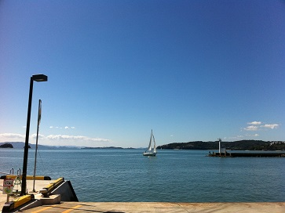

南風荘があるのは、牛窓からフェリーで約5分の島「前島」。
フェリーにはお車ごとご乗船いただけます。
徒歩でご乗船の方は、島内を送迎いたしますのでご安心ください。
まずは岡山県瀬戸内市・牛窓港の「前島行きフェリー乗り場」を目指します。
ホテルリマーニを過ぎて、瀬戸内きらり館の前です。

フェリーは朝6時台から夜21時頃まで、約1時間間隔で運航。
お車ごとご乗船いただけます（お車1台 往復約1,500円）。
徒歩でご乗船の場合は、牛窓側乗り場横の無料駐車スペースをご利用ください。
お車の方は、島内の曲がり角ごとにある看板に沿ってお越しください。
徒歩の方は港までお迎えにあがります。
山陽IC下車→一般道→牛窓「前島行きフェリー乗り場」へ
備前IC下車→岡山ブルーライン（無料道路）→邑久・牛窓IC下車→一般道→牛窓「前島行きフェリー乗り場」へ
邑久駅下車→両備バス（牛窓行き）→終点「牛窓」下車→フェリー乗り場は目の前です
フェリー乗り場横に無料の駐車スペースがございます。
お車を停めて徒歩でご乗船いただけます